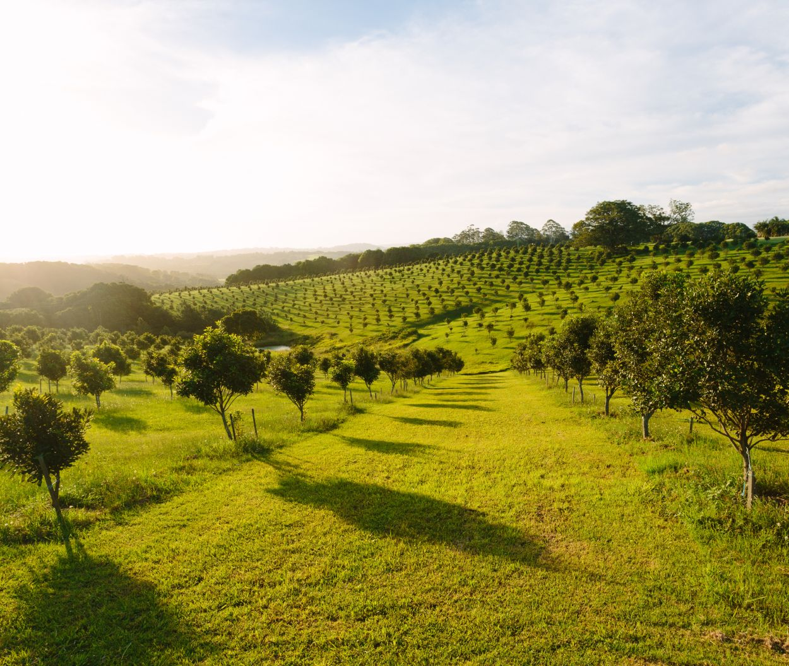
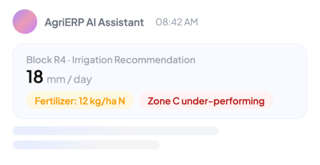

Quick answers
Pull the figure you need, no report required
Ask for one block's yield, your labor spend per acre, or how inventory use stacks up across blocks, and the answer is back in seconds. Questions that once sat waiting for the one person who knows the system now get answered on the spot.
- On-demand yield, cost, inventory, and inspection figures
- Compare blocks, seasons, and crews side by side, no spreadsheet needed
- Ask in everyday language, with no filters or report tools to learn

